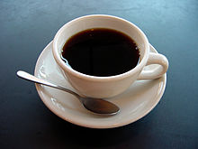

The word "coffee" entered the English language in 1582 via the Dutch koffie, borrowed from the Ottoman Turkish kahve, borrowed in turn from the Arabic قهوة qahwah.[10] The Arabic word qahwah was traditionally held to refer to a type of wine whose etymology is given by Arab lexicographers as deriving from the verb قَهِيَ qahiya, "to lack hunger", in reference to the drink's reputation as an appetite suppressant.
Coffee is abrewed drink prepared from roasted coffee beans, the seeds of berries from certain Coffea species. When coffee berries turn from green to bright red in color – indicating ripeness – they are picked, processed, and dried.[2] Dried coffee seeds (referred to as "beans") are roasted to varying degrees, depending on the desired flavor.Grinding coffee is another important step in coffeee making. Roasted beans are ground and then brewed with near-boiling water to produce the beverage known as coffee.After roasting the coffee isgrinded.No one can understand the truth until he drinks of coffee’s frothy goodness.
Coffee is darkly colored, bitter, slightly acidic and has a stimulating effect in humans, primarily due to its caffeine content.[3] It is one of the most popular drinks in the world,[4] and can be prepared and presented in a variety of ways (e.g., espresso, French press, caffè latte). It is usually served hot, although iced coffee is common.
Clinical research indicates that moderate coffee consumption is benign or mildly beneficial as a stimulant in healthy adults, with continuing research on whether long-term consumption reduces the risk of some diseases, although some of the long-term studies are of questionable credibility.
The earliest credible evidence of coffee-drinking as the modern beverage appears in modern-day Yemen in southern Arabia in the middle of the 15th century in Sufi shrines where coffee seeds were first roasted and brewed in a manner similar to how it is now prepared for drinking.[1] The Yemenis procured the coffee beans from the Ethiopian Highlands and began cultivation. By the 16th century, the drink had reached the rest of the Middle East and North Africa, later spreading to Europe.
The two most commonly grown coffee bean types are C. arabica and C. robusta.Coffee plants are now cultivated in over 70 countries, primarily in the equatorial regions of the Americas, Southeast Asia, the Indian subcontinent, and Africa. As of 2018, Brazil was the leading grower of coffee beans, producing 35% of the world total. Coffee is a major export commodity as the leading legal agricultural export for numerous countries. It is one of the most valuable commodities exported by developing countries. Green, unroasted coffee is one of the most traded agricultural commodities in the world.
Coffee Preparation
The long-standing favorite has been a classic drip coffee machine, but pour-over coffee at home is becoming increasingly more popular, and the French press is an easy favorite as well.
First, bring cold water to a boil in a kettle.
If using whole beans, grind the beans to a uniform consistency similar to granulated table salt
Meanwhile, put a filter in the brewer and rinse with hot water. This removes the papery residue on the filter and warms up the brewer, keeping your coffee hot for longer. Discard the water used for rinsing.
Add the grounds to the filter, making sure the surface is level. When the water is between 195°F and 205°F (about a minute after removal from the heat), slowly and steadily pour just enough water over the grounds to saturate them completely, starting from the middle and working your way outward. Stop pouring before the coffee begins to drip through. This is called the "bloom" pour, which allows the coffee to de-gas.
Slowly pour in the remaining water, keeping the water in the dripper between half and three-quarters full. This should take 3 to 4 minutes. Carefully remove the filter, then serve and enjoy.
Roasting
The next step in the process is the roasting of the green coffee. Coffee is usually sold in a roasted state, and with rare exceptions, such as infusions from green coffee beans[90], coffee is roasted before it is consumed. It can be sold roasted by the supplier, or it can be home roasted.[91] The roasting process influences the taste of the beverage by changing the coffee bean both physically and chemically. The bean decreases in weight as moisture is lost and increases in volume, causing it to become less dense. The density of the bean also influences the strength of the coffee and requirements for packaging.
Grinding
Depending on the color of the roasted beans as perceived by the human eye, they will be labeled as light, medium light, medium, medium dark, dark, or very dark. A more accurate method of discerning the degree of roast involves measuring the reflected light from roasted seeds illuminated with a light source in the near-infrared spectrum. This elaborate light meter uses a process known as spectroscopy to return a number that consistently indicates the roasted coffee's relative degree of roast or flavor development.When grinding your coffee beans with a mortar and pestle, you'll want to be careful not to crush them into un-filterable dust. You'll need about two tablespoons of grinds per cup you want to brew. If you can fit it into your mortar, add as many beans as you need all at once.
Brewing
Coffee beans must be ground and brewed to create a beverage. The criteria for choosing a method include flavor and economy. Almost all methods of preparing coffee require that the beans be ground and then mixed with hot water long enough to allow the flavor to emerge but not so long as to draw out bitter compounds. The liquid can be consumed after the spent grounds are removed. Brewing considerations include the fineness of grind, the way in which the water is used to extract the flavor, the ratio of coffee grounds to water (the brew ratio), additional flavorings such as sugar, milk, and spices, and the technique to be used to separate spent grounds. Optimal coffee extraction occurs between 91 to 96 °C (195 to 205 °F).[101] Ideal holding temperatures range from 85 to 88 °C (185 to 190 °F) to as high as 93 °C (199 °F) and the ideal serving temperature is 68 to 79 °C (154 to 174 °F). The recommended brew ratio for non-espresso coffee is around 55 to 60 grams of grounds per litre of water, or two level tablespoons for a 150-to-180-millilitre.